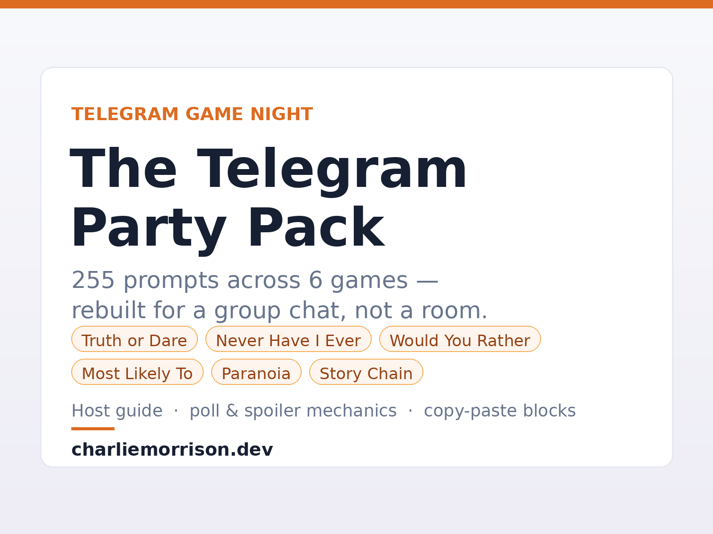

Six party games rewritten for a group chat instead of a living room, with the poll, spoiler and reply-thread mechanics that make them actually work in text.

Instant download · ZIP with PDF, copy-paste text and poll blocks · English
Get Instant AccessMost "Telegram party game" advice points you at a bot. We tested that assumption the hard way: when we messaged 18 game bots recommended across current listicles and forum threads, seven of them never replied at all. A bot is somebody's server. When that person stops paying for it, the bot does not announce its death — it just goes quiet mid-round, and the group blames the host.
We know the failure mode from the inside, because it happened to our own game bot. Prompts you paste yourself cannot go offline. That is the entire design brief for this pack: everything in it works with nothing but the Telegram app you already have.
Plus a Two Truths and a Lie category sheet (10 themed categories) and a host guide. The advertised 255 counts prompts only. The category sheet is a bonus, not padding for the number.
In a voice room, people answer at once. In a chat, whoever types first sets the answer everyone else drifts toward. Sending the prompt as a poll removes that: votes stay hidden until people commit. Every Would You Rather and Most Likely To prompt in the pack ships as a ready-made question plus option list.
One practical limit worth knowing before you write your own: we sent real requests to the Bot API and a poll accepts at most 12 options — a 13th comes back as Bad Request: poll can't have more than 12 options. Every option block in the pack is inside that ceiling. See the official sendPoll reference for the full parameter list.
Paranoia only works if the question stays hidden and the answer is public. Telegram's spoiler formatting gives you exactly that for free: wrap text in ||double pipes|| and it stays blurred until someone taps it. All 25 Paranoia prompts are written with the reveal in mind.
A group chat scrolls. Replying to the prompt message keeps a round's answers attached to it instead of scattered through twenty unrelated messages — which is what makes Story Chain readable at the end.
Real lines, not samples written for the sales page. If these land with your group, the other 247 are the same voice:
The Party Game Mini App is free, runs Truth, Dare, Never Have I Ever and Would You Rather, works in English and Ukrainian, and needs no download — it also opens in a browser. Play a few rounds. Buy the pack when you run out of material or want the poll and spoiler formats.
Built and written by Charlie Morrison. Counts on this page are generated from the pack's own content files, not typed by hand.
← Browse all products